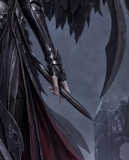
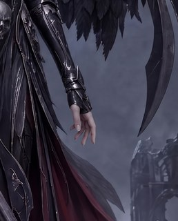
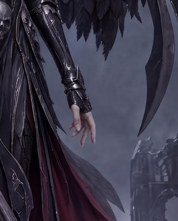
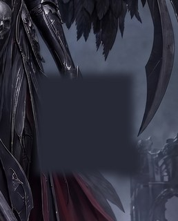
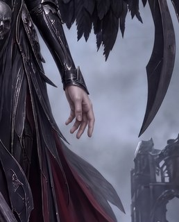
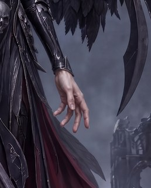

Four crop-local edits remove the W2 keeper's last unwanted prop: two rolls of the proven r3 crop recipe and two rolls of blank-then-restore, each pasted back into the untouched wallpaper with zero changed pixels outside the approved hand rectangle.
COMPLETE — Jake's verdict pending. Dimitri's preliminary eye-call is that both C′ candidates are good, while both D′x candidates lose consistency with the other hand in glove treatment and skin colour. D′x1 also lightens the local background; D′x2 makes the hand too large. His working hypothesis is insufficient crop context: a future edit should test supplying the full image beside the crop, or include the other hand and representative skin inside the crop. That is a hypothesis to test, not established causality. No keeper is promoted until Jake's final judgement. The exact four-artifact blind run completed with 0 degraded / 0 failed records. Total accounted machine spend is approximately $0.2510 of the $1.00 cap.
Verdicts / info needed
Both machine lanes are complete and Dimitri's preliminary eye-call is recorded. Jake's judgement decides the final R6 result.
Jake: does C′1 or C′2 finish W2 — or do you disagree with the preliminary shortlist?Jake
Dimitri preliminarily rates both C′ candidates good and flags both D′x candidates for other-hand inconsistency. Judge at wallpaper scale and zoomed: hand size, glove/skin consistency, clean cuff junction, no dagger residue, and no visible edit seam.
Pick C′1 or C′2 — Dimitri's preliminary shortlist; either final pick can finish W2.
Pick D′x1 or D′x2 — if Jake prefers one despite the recorded issues.
Reject all + feedback — fresh instructions become the next runbook input.
Core inputs — the base image(s) these candidates were built from
Untouched W2 keeper — round 5
C′ — proven crop edit + deterministic paste-back
The intact hand-region crop was edited with the r3 dagger-removal recipe. Both rolls materially changed the dagger region and therefore were not prompt no-ops.
Dimitri's preliminary R6 eye-call groups both C candidates as good. He identified the consistency problems on the D arm, not on this candidate. This is not a final keeper promotion; Jake's judgement remains pending.
Dimitri's preliminary R6 eye-call groups both C candidates as good. He identified the consistency problems on the D arm, not on this candidate. This is not a final keeper promotion; Jake's judgement remains pending.
D′x — blank then restore + deterministic paste-back
The dagger and lower hand were blanked with shape-neutral rectangles before restoration, preventing the old prop footprint from anchoring the edit. Fractions are informational because a prompt no-op was impossible by construction.
Dimitri's preliminary eye-call finds D′x1 inconsistent with the other hand in glove treatment and skin colour, with a locally lighter restored background. His working hypothesis is insufficient crop context; it is a future input-design idea, not proven causality. Jake's final judgement remains pending.
Dimitri's preliminary eye-call finds D′x2 inconsistent with the other hand in glove treatment and skin colour, and the edited hand too large. His working hypothesis is insufficient crop context; it is a future input-design idea, not proven causality. Jake's final judgement remains pending.
Proposed next steps
FAST and SLOW are complete and Dimitri's preliminary shortlist is recorded; Jake's final eye-call remains before promotion.
Record Jake's final eye-callnow
Confirm C′1 or C′2, choose a different candidate, or reject all four. Dimitri's preliminary view and machine calls do not promote by themselves.
Prepare the free 9:20 delivery crop previewonly after a human keeper verdict
This was accepted in principle in r3 but remains outside R6 and cannot begin from a provisional panel.
Jake's eye-call remains. Confirm C′1 or C′2, choose another candidate, or reject all four with fresh feedback; no preliminary or machine call promotes by itself.
ATTACHED IMAGE
One image is attached. IMAGE 1 is a CROP from a larger finished photorealistic artwork: a woman's bare hand emerging from an armoured vambrace, beside dark layered drapery with deep-red lining on the viewer's left; pale fog and a ruined gothic tower fill the background on the viewer's right; black feathers and dark curved metal wing-blades enter from the top and the upper right. Your task is a SURGICAL EDIT: apply ONLY the correction listed below and leave everything else untouched.
EDIT — REMOVE THE BLADE
A slender dagger-like blade is threaded between the fingers of the hand — it has no handle and attaches to nothing. Remove that blade completely and redraw the hand as a natural, relaxed EMPTY hand with five fingers, the palm and fingertips fully restored where the blade covered them, hanging loosely downward from the vambrace. The hand holds NOTHING — no blade, dagger, weapon, or any other object. Where the removed blade covered the drapery, fog, or ruins, continue those surfaces naturally.
PRESERVATION
Apart from that edit, reproduce IMAGE 1 EXACTLY: the same hand position and skin, the same vambrace and drapery, the same feathers and wing-blades, the same fog and ruins, the same lighting and colour grading, at the same framing on the same canvas shape as IMAGE 1 — do not zoom, crop further, or extend the scene. Add no new objects, no extra glow, and no text, labels, logos, or watermarks.
Inputs
scythe-valkyrie-r5-w2-blankboxg-comp-1.png
Intermediate stage — produced in this round

scythe-valkyrie-r6-w2-hand-crop.png — output of scythe-valkyrie-r6-w2-hand-crop

scythe-valkyrie-r6-w2-hand-1.jpg — output of scythe-valkyrie-r6-w2-hand-1
ATTACHED IMAGE
One image is attached. IMAGE 1 is a CROP from a larger finished photorealistic artwork: a woman's bare hand emerging from an armoured vambrace, beside dark layered drapery with deep-red lining on the viewer's left; pale fog and a ruined gothic tower fill the background on the viewer's right; black feathers and dark curved metal wing-blades enter from the top and the upper right. Your task is a SURGICAL EDIT: apply ONLY the correction listed below and leave everything else untouched.
EDIT — REMOVE THE BLADE
A slender dagger-like blade is threaded between the fingers of the hand — it has no handle and attaches to nothing. Remove that blade completely and redraw the hand as a natural, relaxed EMPTY hand with five fingers, the palm and fingertips fully restored where the blade covered them, hanging loosely downward from the vambrace. The hand holds NOTHING — no blade, dagger, weapon, or any other object. Where the removed blade covered the drapery, fog, or ruins, continue those surfaces naturally.
PRESERVATION
Apart from that edit, reproduce IMAGE 1 EXACTLY: the same hand position and skin, the same vambrace and drapery, the same feathers and wing-blades, the same fog and ruins, the same lighting and colour grading, at the same framing on the same canvas shape as IMAGE 1 — do not zoom, crop further, or extend the scene. Add no new objects, no extra glow, and no text, labels, logos, or watermarks.
Inputs
scythe-valkyrie-r5-w2-blankboxg-comp-1.png
Intermediate stage — produced in this round
scythe-valkyrie-r6-w2-hand-crop.png — output of scythe-valkyrie-r6-w2-hand-crop

scythe-valkyrie-r6-w2-hand-2.jpg — output of scythe-valkyrie-r6-w2-hand-2
ATTACHED IMAGE
One image is attached. IMAGE 1 is a CROP from a larger finished photorealistic artwork, in which one region has been deliberately PAINTED OUT with a flat dark grey-blue tone. The visible scene: an armoured vambrace on a woman's forearm reaches down from the top edge and ends at the painted-out region; dark layered drapery with deep-red lining fills the viewer's left; pale fog and a ruined gothic tower fill the background on the viewer's right; black feathers and dark curved metal wing-blades enter from the top and the upper right.
RESTORE THE PAINTED-OUT REGION
Fill the painted-out region so the artwork reads as always having been complete:
- Her bare hand emerges from the vambrace as a natural, relaxed EMPTY five-fingered hand, hanging loosely downward beside the drapery, in the same photoreal skin rendering as the rest of the artwork. The hand holds NOTHING — no blade, dagger, weapon, or any other object appears anywhere in the restored region.
- Behind and around the hand, continue the existing drapery edge, fog, and ruins naturally so the fill matches its surroundings seamlessly.
PRESERVATION
Everything OUTSIDE the painted-out region must be reproduced EXACTLY as shown: the same vambrace, drapery, feathers, wing-blades, fog, ruins, lighting and colour grading, at the same framing on the same canvas shape as IMAGE 1 — do not zoom, crop further, or extend the scene. Add no new objects, no extra glow, and no text, labels, logos, or watermarks.
Inputs
scythe-valkyrie-r5-w2-blankboxg-comp-1.png
Intermediate stage — produced in this round

scythe-valkyrie-r6-w2-hand-crop-blank.png — output of scythe-valkyrie-r6-w2-hand-crop-blank

scythe-valkyrie-r6-w2-handblank-1.jpg — output of scythe-valkyrie-r6-w2-handblank-1
ATTACHED IMAGE
One image is attached. IMAGE 1 is a CROP from a larger finished photorealistic artwork, in which one region has been deliberately PAINTED OUT with a flat dark grey-blue tone. The visible scene: an armoured vambrace on a woman's forearm reaches down from the top edge and ends at the painted-out region; dark layered drapery with deep-red lining fills the viewer's left; pale fog and a ruined gothic tower fill the background on the viewer's right; black feathers and dark curved metal wing-blades enter from the top and the upper right.
RESTORE THE PAINTED-OUT REGION
Fill the painted-out region so the artwork reads as always having been complete:
- Her bare hand emerges from the vambrace as a natural, relaxed EMPTY five-fingered hand, hanging loosely downward beside the drapery, in the same photoreal skin rendering as the rest of the artwork. The hand holds NOTHING — no blade, dagger, weapon, or any other object appears anywhere in the restored region.
- Behind and around the hand, continue the existing drapery edge, fog, and ruins naturally so the fill matches its surroundings seamlessly.
PRESERVATION
Everything OUTSIDE the painted-out region must be reproduced EXACTLY as shown: the same vambrace, drapery, feathers, wing-blades, fog, ruins, lighting and colour grading, at the same framing on the same canvas shape as IMAGE 1 — do not zoom, crop further, or extend the scene. Add no new objects, no extra glow, and no text, labels, logos, or watermarks.
Inputs
scythe-valkyrie-r5-w2-blankboxg-comp-1.png
Intermediate stage — produced in this round
scythe-valkyrie-r6-w2-hand-crop-blank.png — output of scythe-valkyrie-r6-w2-hand-crop-blank

scythe-valkyrie-r6-w2-handblank-2.jpg — output of scythe-valkyrie-r6-w2-handblank-2